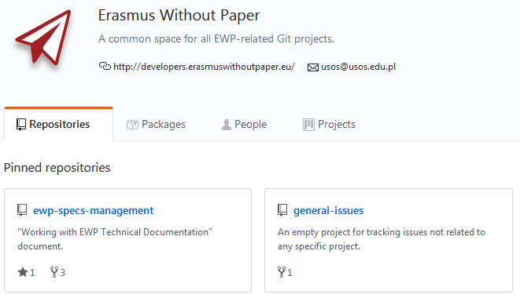
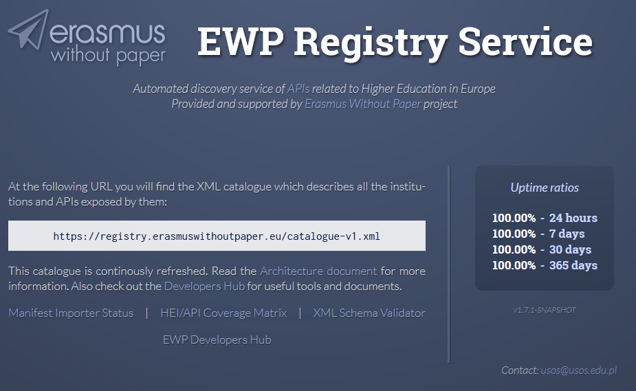

AUTH in the EWP Network
Maria Tsiakmaki | Konstantinos Karaoglanoglou
IT Center of AUTH

Intro
Erasmus Without Paper is a project co-funded by the the European Commission.
Erasmus without Paper is about:
- Replacing a paper-based workflow by a digital one
- Tackling the administrative workload for students and staff
- Creating free public infrastructure.
- Streamlining technical solutions for student mobility.
Intro
The current ongoing project Erasmus Without Paper 2.0 will run throughout 2018 and 2019.
More attention is given to support universities that do not have IT-solutions.
Intro
Consortium of 14 partner institutions composed of public institutions, higher education organisations, and companies from 8 European countries along with 12 associate partners
EWP Architecture
Consists of many independent modules(APIs).
- Institutions
- Organizational Units
- Courses
- Simple Course Replication
- Outgoing Mobilities
- Incoming Mobilities
- Learning Agreements
- Transcripts of Records
EWP Architecture
Each institution can choose which of theese modules to implement depending on their needs.
XML, XSD Schema files
Describe the APIs for
- Institutions
- Organizational Units
- Courses
- Simple Course Replication
- Outgoing Mobilities
- Incoming Mobilities
- Learning Agreements
- Transcripts of Records
Available at: https://github.com/erasmus-without-paper/
EWP-related Git projects
EWP Registry Service
Catalogue which describes all the institutions and modules implemented by them.
Functions like a phonebook in the ewp network.
EWP Registry Service
HEI/API Coverage Matrix

Manifest File
Each institution publishes one in the EWP network.
Contains all the info regarding the institution.
Whenever the data in the manifest change, the registry is updated automatically.
EWP Registry Service
Catalogue which describes all the institutions and APIs exposed by them.
EWP Registry Service
Dev Registry Service for development purposes.
HEI/API Coverage Matrix
Manifest Importer Status
Registry is updated automatically
How Did AUTH Join the EWP Network
Schema Understanding and Documentation Understanding
Collaboration of different University Units (EUREP, IT Center of AUTh, QA)
Testing
How Did AUTh Join the EWP Network
Joining the EWP network begins with publishing your manifest file to the registry service.
Done through human interaction.
All the subsequent changes during the implementation are updated automatically as they happen.
How Did AUTh Join the EWP Network
The next step is deciding what modules to implement and their feasibility.
Technical Difficulties
- Some required data may not be collected in the SIS or be distributed over different in the institution.
- Data may be stored in different formats than those required or not even be digitised in the first place.
- It is not easy for an instution to connect to the EWP network without a dedicated development team.
- Currently used tools may not be compatible with EWP (i.e. IIAs via Google forms)
Issues/Difficulties
Who are the data-holders? Identifying all the relevant stakeholders.
Technical Issues?
What's Next for AUTH in the EWP Network
Implementing more modules
Intergrating EWP in the existing mobility workflows.
Links
Erasmus Without Paper - Competence Centre | https://cc.erasmuswithoutpaper.eu/
Architecture and Common Datatypes | https://github.com/erasmus-without-paper/ewp-specs-architecture
EWP Registry Service | https://registry.erasmuswithoutpaper.eu/
DEV Registry Service | https://dev-registry.erasmuswithoutpaper.eu/
Developers Hub - Specifications, Validators and Tools | https://developers.erasmuswithoutpaper.eu/
Github | https://github.com/erasmus-without-paper
LinkedIn group | https://www.linkedin.com/groups/13590744/
Twitter | https://twitter.com/hashtag/ErasmusWithoutPaper